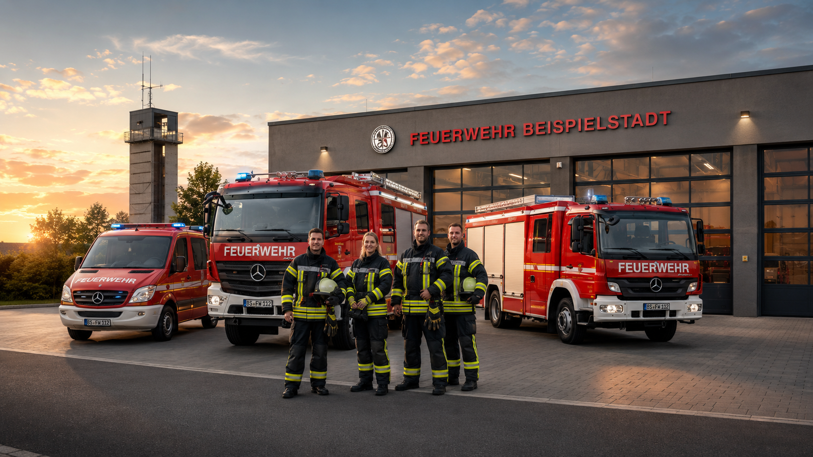

Brandbekämpfung
Von Kleinbränden bis zu Gebäudebränden: Wir retten Menschen, schützen Sachwerte und verhindern die Ausbreitung.
Brandschutztipps24/7 einsatzbereit
Wir sind Menschen aus der Stadt, die neben Beruf und Familie Verantwortung übernehmen. Bei Bränden, Unfällen, Unwettern und Veranstaltungen stehen wir bereit – freiwillig, professionell und nah an der Bevölkerung.

Von Kleinbränden bis zu Gebäudebränden: Wir retten Menschen, schützen Sachwerte und verhindern die Ausbreitung.
BrandschutztippsVerkehrsunfälle, Sturmschäden, Türöffnungen, Wasser im Keller und Gefahrgutlagen gehören zu unserem Alltag.
EinsatzartenAusbildung, Teamgeist und Verantwortung: Bei uns zählt jede helfende Hand – auch ohne Vorerfahrung.
MitmachenAktuell
Beispielhafte Inhalte für die Startseite. Später kannst du diese Liste per CMS, JSON oder PHP ersetzen.
Kontrolle des Objekts, keine Feststellung, Anlage zurückgestellt.
Ausbildung an hydraulischem Rettungsgerät und Stabilisierungssystemen.
Starke Leistung beim Orientierungsmarsch der Jugendgruppen.
Du fehlst uns
Freiwillige Feuerwehr funktioniert, weil Bürgerinnen und Bürger Verantwortung übernehmen. Technikverständnis, Teamgeist und Lernbereitschaft reichen für den Anfang.